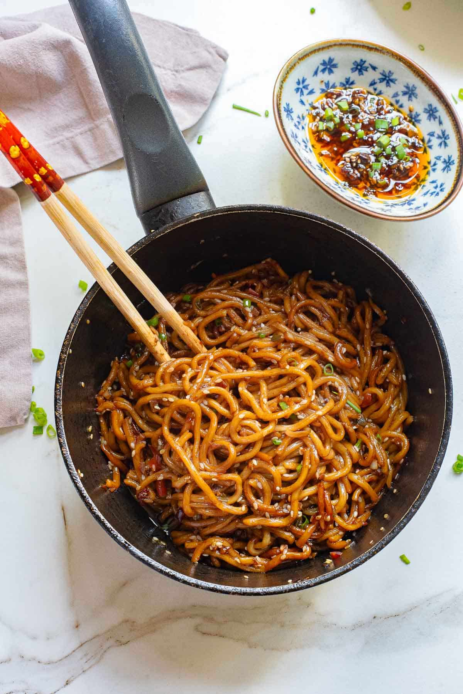

Spicy Chilli Oil Ramen (1 Serving )

Description
It is an Easy as well as an Tasty recipe which can be made in 20 minutes. Perfect Recipe to make after an Tiring Day
One Pro of this recipe is that you can Customize this recipe to your liking with your favourite toppings
INGREDIENTS
- 1 Packet of your Favourite Instant Ramen Noodles
- 2-3 tbspn Cooking Oil
- 2 Green Onions
- 3-4 Cloves of Garlic (Thinly Chopped)
- 1 tbspn Chilli Flakes or Red Chilli Powder
- 1 tbspn Soy Sauce
- 1 tbspn Chilli Sauce
- 1 1/2 Cup Water
ADDITIONAL INGREDIENTS
- Soft Boiled Egg(Better: Egg cooked in a way you like it)
- Grilled Chicken
- Any Veggies of your Choice
RECIPE
- Add 2 tbspn Oil. Put the flame on low.
- Add Chopped Green Onions and Chopped Garlic. Saute until Garlic is Golden
- Add CHilli Flakes or Red Chilli mix it and Keep it aside.
- For Broth; Pour 1 1/2 cups of water in the pan. Boil The veggies (if any ).
- Add Ramen Noodle and Boil until Cooked.
- In a Bowl; Add 1 tbspn of Chilli Oil(made before), 1 tbspn Soy Sauce and Chilli Sauce, Then Add the Broth and Noodles, Mix Well
- Add Your Additional Toppings
Return To Recipes LogBook